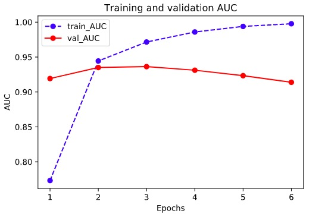

6-1 Three Ways of Modeling#
There are three ways of modeling: using Sequential to construct model with the order of layers, using functional APIs to construct model with arbitrary structure, using child class inheriting from the base class Model.
For the models with sequenced structure, Sequential method should be given the highest priority.
For the models with nonsequenced structures such as multiple input/output, shared weights, or residual connections, modeling with functional API is recommended.
Modeling through child class of Model should be AVOIDED unless with special requirements. This method is flexible, but also fallible.
Here are the examples of modeling using the three above-mentioned methods to classify IMDB movie reviews.
import numpy as np
import pandas as pd
import tensorflow as tf
from tqdm import tqdm
from tensorflow.keras import *
train_token_path = "../../data/imdb/train_token.csv"
test_token_path = "../../data/imdb/test_token.csv"
MAX_WORDS = 10000 # We will only consider the top 10,000 words in the dataset
MAX_LEN = 200 # We will cut reviews after 200 words
BATCH_SIZE = 20
# Constructing data pipeline
def parse_line(line):
t = tf.strings.split(line,"\t")
label = tf.reshape(tf.cast(tf.strings.to_number(t[0]),tf.int32),(-1,))
features = tf.cast(tf.strings.to_number(tf.strings.split(t[1]," ")),tf.int32)
return (features,label)
ds_train= tf.data.TextLineDataset(filenames = [train_token_path]) \
.map(parse_line,num_parallel_calls = tf.data.experimental.AUTOTUNE) \
.shuffle(buffer_size = 1000).batch(BATCH_SIZE) \
.prefetch(tf.data.experimental.AUTOTUNE)
ds_test= tf.data.TextLineDataset(filenames = [test_token_path]) \
.map(parse_line,num_parallel_calls = tf.data.experimental.AUTOTUNE) \
.shuffle(buffer_size = 1000).batch(BATCH_SIZE) \
.prefetch(tf.data.experimental.AUTOTUNE)
1. Modeling Using Sequential#
tf.keras.backend.clear_session()
model = models.Sequential()
model.add(layers.Embedding(MAX_WORDS,7,input_length=MAX_LEN))
model.add(layers.Conv1D(filters = 64,kernel_size = 5,activation = "relu"))
model.add(layers.MaxPool1D(2))
model.add(layers.Conv1D(filters = 32,kernel_size = 3,activation = "relu"))
model.add(layers.MaxPool1D(2))
model.add(layers.Flatten())
model.add(layers.Dense(1,activation = "sigmoid"))
model.compile(optimizer='Nadam',
loss='binary_crossentropy',
metrics=['accuracy',"AUC"])
model.summary()

import datetime
baselogger = callbacks.BaseLogger(stateful_metrics=["AUC"])
logdir = "../../data/keras_model/" + datetime.datetime.now().strftime("%Y%m%d-%H%M%S")
tensorboard_callback = tf.keras.callbacks.TensorBoard(logdir, histogram_freq=1)
history = model.fit(ds_train,validation_data = ds_test,
epochs = 6,callbacks=[baselogger,tensorboard_callback])
%matplotlib inline
%config InlineBackend.figure_format = 'svg'
import matplotlib.pyplot as plt
def plot_metric(history, metric):
train_metrics = history.history[metric]
val_metrics = history.history['val_'+metric]
epochs = range(1, len(train_metrics) + 1)
plt.plot(epochs, train_metrics, 'bo--')
plt.plot(epochs, val_metrics, 'ro-')
plt.title('Training and validation '+ metric)
plt.xlabel("Epochs")
plt.ylabel(metric)
plt.legend(["train_"+metric, 'val_'+metric])
plt.show()
plot_metric(history,"AUC")

2. Modeling Using Functional API#
tf.keras.backend.clear_session()
inputs = layers.Input(shape=[MAX_LEN])
x = layers.Embedding(MAX_WORDS,7)(inputs)
branch1 = layers.SeparableConv1D(64,3,activation="relu")(x)
branch1 = layers.MaxPool1D(3)(branch1)
branch1 = layers.SeparableConv1D(32,3,activation="relu")(branch1)
branch1 = layers.GlobalMaxPool1D()(branch1)
branch2 = layers.SeparableConv1D(64,5,activation="relu")(x)
branch2 = layers.MaxPool1D(5)(branch2)
branch2 = layers.SeparableConv1D(32,5,activation="relu")(branch2)
branch2 = layers.GlobalMaxPool1D()(branch2)
branch3 = layers.SeparableConv1D(64,7,activation="relu")(x)
branch3 = layers.MaxPool1D(7)(branch3)
branch3 = layers.SeparableConv1D(32,7,activation="relu")(branch3)
branch3 = layers.GlobalMaxPool1D()(branch3)
concat = layers.Concatenate()([branch1,branch2,branch3])
outputs = layers.Dense(1,activation = "sigmoid")(concat)
model = models.Model(inputs = inputs,outputs = outputs)
model.compile(optimizer='Nadam',
loss='binary_crossentropy',
metrics=['accuracy',"AUC"])
model.summary()
Model: "model"
__________________________________________________________________________________________________
Layer (type) Output Shape Param # Connected to
==================================================================================================
input_1 (InputLayer) [(None, 200)] 0
__________________________________________________________________________________________________
embedding (Embedding) (None, 200, 7) 70000 input_1[0][0]
__________________________________________________________________________________________________
separable_conv1d (SeparableConv (None, 198, 64) 533 embedding[0][0]
__________________________________________________________________________________________________
separable_conv1d_2 (SeparableCo (None, 196, 64) 547 embedding[0][0]
__________________________________________________________________________________________________
separable_conv1d_4 (SeparableCo (None, 194, 64) 561 embedding[0][0]
__________________________________________________________________________________________________
max_pooling1d (MaxPooling1D) (None, 66, 64) 0 separable_conv1d[0][0]
__________________________________________________________________________________________________
max_pooling1d_1 (MaxPooling1D) (None, 39, 64) 0 separable_conv1d_2[0][0]
__________________________________________________________________________________________________
max_pooling1d_2 (MaxPooling1D) (None, 27, 64) 0 separable_conv1d_4[0][0]
__________________________________________________________________________________________________
separable_conv1d_1 (SeparableCo (None, 64, 32) 2272 max_pooling1d[0][0]
__________________________________________________________________________________________________
separable_conv1d_3 (SeparableCo (None, 35, 32) 2400 max_pooling1d_1[0][0]
__________________________________________________________________________________________________
separable_conv1d_5 (SeparableCo (None, 21, 32) 2528 max_pooling1d_2[0][0]
__________________________________________________________________________________________________
global_max_pooling1d (GlobalMax (None, 32) 0 separable_conv1d_1[0][0]
__________________________________________________________________________________________________
global_max_pooling1d_1 (GlobalM (None, 32) 0 separable_conv1d_3[0][0]
__________________________________________________________________________________________________
global_max_pooling1d_2 (GlobalM (None, 32) 0 separable_conv1d_5[0][0]
__________________________________________________________________________________________________
concatenate (Concatenate) (None, 96) 0 global_max_pooling1d[0][0]
global_max_pooling1d_1[0][0]
global_max_pooling1d_2[0][0]
__________________________________________________________________________________________________
dense (Dense) (None, 1) 97 concatenate[0][0]
==================================================================================================
Total params: 78,938
Trainable params: 78,938
Non-trainable params: 0
__________________________________________________________________________________________________

import datetime
logdir = "../../data/keras_model/" + datetime.datetime.now().strftime("%Y%m%d-%H%M%S")
tensorboard_callback = tf.keras.callbacks.TensorBoard(logdir, histogram_freq=1)
history = model.fit(ds_train,validation_data = ds_test,epochs = 6,callbacks=[tensorboard_callback])
Epoch 1/6
1000/1000 [==============================] - 32s 32ms/step - loss: 0.5527 - accuracy: 0.6758 - AUC: 0.7731 - val_loss: 0.3646 - val_accuracy: 0.8426 - val_AUC: 0.9192
Epoch 2/6
1000/1000 [==============================] - 24s 24ms/step - loss: 0.3024 - accuracy: 0.8737 - AUC: 0.9444 - val_loss: 0.3281 - val_accuracy: 0.8644 - val_AUC: 0.9350
Epoch 3/6
1000/1000 [==============================] - 24s 24ms/step - loss: 0.2158 - accuracy: 0.9159 - AUC: 0.9715 - val_loss: 0.3461 - val_accuracy: 0.8666 - val_AUC: 0.9363
Epoch 4/6
1000/1000 [==============================] - 24s 24ms/step - loss: 0.1492 - accuracy: 0.9464 - AUC: 0.9859 - val_loss: 0.4017 - val_accuracy: 0.8568 - val_AUC: 0.9311
Epoch 5/6
1000/1000 [==============================] - 24s 24ms/step - loss: 0.0944 - accuracy: 0.9696 - AUC: 0.9939 - val_loss: 0.4998 - val_accuracy: 0.8550 - val_AUC: 0.9233
Epoch 6/6
1000/1000 [==============================] - 26s 26ms/step - loss: 0.0526 - accuracy: 0.9865 - AUC: 0.9977 - val_loss: 0.6463 - val_accuracy: 0.8462 - val_AUC: 0.9138
plot_metric(history,"AUC")

3. Customized Modeling Using Child Class of Model#
# Define a customized residual module as Layer
class ResBlock(layers.Layer):
def __init__(self, kernel_size, **kwargs):
super(ResBlock, self).__init__(**kwargs)
self.kernel_size = kernel_size
def build(self,input_shape):
self.conv1 = layers.Conv1D(filters=64,kernel_size=self.kernel_size,
activation = "relu",padding="same")
self.conv2 = layers.Conv1D(filters=32,kernel_size=self.kernel_size,
activation = "relu",padding="same")
self.conv3 = layers.Conv1D(filters=input_shape[-1],
kernel_size=self.kernel_size,activation = "relu",padding="same")
self.maxpool = layers.MaxPool1D(2)
super(ResBlock,self).build(input_shape) # Identical to self.built = True
def call(self, inputs):
x = self.conv1(inputs)
x = self.conv2(x)
x = self.conv3(x)
x = layers.Add()([inputs,x])
x = self.maxpool(x)
return x
# Need to define get_config method in order to sequentialize the model constructed from the customized Layer by Functional API.
def get_config(self):
config = super(ResBlock, self).get_config()
config.update({'kernel_size': self.kernel_size})
return config
# Test ResBlock
resblock = ResBlock(kernel_size = 3)
resblock.build(input_shape = (None,200,7))
resblock.compute_output_shape(input_shape=(None,200,7))
TensorShape([None, 100, 7])
# Customized model, which could also be implemented by Sequential or Functional API
class ImdbModel(models.Model):
def __init__(self):
super(ImdbModel, self).__init__()
def build(self,input_shape):
self.embedding = layers.Embedding(MAX_WORDS,7)
self.block1 = ResBlock(7)
self.block2 = ResBlock(5)
self.dense = layers.Dense(1,activation = "sigmoid")
super(ImdbModel,self).build(input_shape)
def call(self, x):
x = self.embedding(x)
x = self.block1(x)
x = self.block2(x)
x = layers.Flatten()(x)
x = self.dense(x)
return(x)
tf.keras.backend.clear_session()
model = ImdbModel()
model.build(input_shape =(None,200))
model.summary()
model.compile(optimizer='Nadam',
loss='binary_crossentropy',
metrics=['accuracy',"AUC"])
Model: "imdb_model"
_________________________________________________________________
Layer (type) Output Shape Param #
=================================================================
embedding (Embedding) multiple 70000
_________________________________________________________________
res_block (ResBlock) multiple 19143
_________________________________________________________________
res_block_1 (ResBlock) multiple 13703
_________________________________________________________________
dense (Dense) multiple 351
=================================================================
Total params: 103,197
Trainable params: 103,197
Non-trainable params: 0
_________________________________________________________________

import datetime
logdir = "../tflogs/keras_model/" + datetime.datetime.now().strftime("%Y%m%d-%H%M%S")
tensorboard_callback = tf.keras.callbacks.TensorBoard(logdir, histogram_freq=1)
history = model.fit(ds_train,validation_data = ds_test,
epochs = 6,callbacks=[tensorboard_callback])
Epoch 1/6
1000/1000 [==============================] - 47s 47ms/step - loss: 0.5629 - accuracy: 0.6618 - AUC: 0.7548 - val_loss: 0.3422 - val_accuracy: 0.8510 - val_AUC: 0.9286
Epoch 2/6
1000/1000 [==============================] - 43s 43ms/step - loss: 0.2648 - accuracy: 0.8903 - AUC: 0.9576 - val_loss: 0.3276 - val_accuracy: 0.8650 - val_AUC: 0.9410
Epoch 3/6
1000/1000 [==============================] - 42s 42ms/step - loss: 0.1573 - accuracy: 0.9439 - AUC: 0.9846 - val_loss: 0.3861 - val_accuracy: 0.8682 - val_AUC: 0.9390
Epoch 4/6
1000/1000 [==============================] - 42s 42ms/step - loss: 0.0849 - accuracy: 0.9706 - AUC: 0.9950 - val_loss: 0.5324 - val_accuracy: 0.8616 - val_AUC: 0.9292
Epoch 5/6
1000/1000 [==============================] - 43s 43ms/step - loss: 0.0393 - accuracy: 0.9876 - AUC: 0.9986 - val_loss: 0.7693 - val_accuracy: 0.8566 - val_AUC: 0.9132
Epoch 6/6
1000/1000 [==============================] - 44s 44ms/step - loss: 0.0222 - accuracy: 0.9926 - AUC: 0.9994 - val_loss: 0.9328 - val_accuracy: 0.8584 - val_AUC: 0.9052
plot_metric(history,"AUC")

Please leave comments in the WeChat official account "Python与算法之美" (Elegance of Python and Algorithms) if you want to communicate with the author about the content. The author will try best to reply given the limited time available.
You are also welcomed to join the group chat with the other readers through replying 加群 (join group) in the WeChat official account.